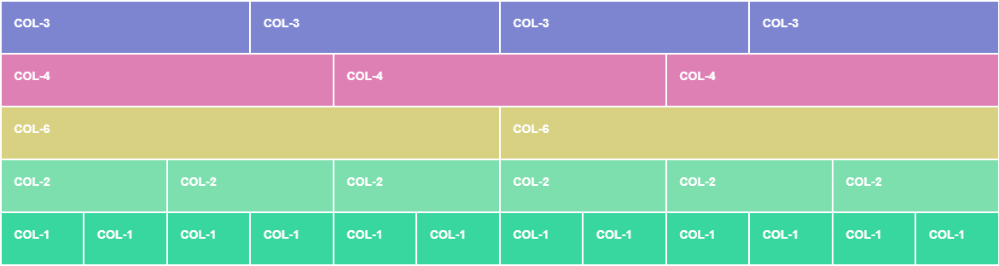

Bootstrap
les brealpoints
| Taille | brealpoints | classe | taille d'écran |
|---|---|---|---|
| très petite | 576px | aucun | petit smartphone |
| petite | >=576px | -sm | smartphone |
| moyenne | >=768px | -md | tablette |
| grande | >=992px | -lg | grande tablette/petit pc |
| très grande | >=1200px | -xl | écran 15" |
| très très grande | >=1400px | -xxl | écran>15" |
les containers
les containers sont les éléments de base de Bootstrap, ils enveloppent le contenu et sont nécessaires pour la mise en page
les grilles
Bootstrap possède un système de grilles, les grilles sont basés sur une succession de ligne (row) et de colonnes (col) qui vont nous aider à mettre en page nos documents.
une row permet d'intégrer une ou plusieurs col
2 colonnes avec class="col"
chacun des div prend12/2=6colonnes
X est un nombre donné, sachant que le total des deux ne peut pas dépasser 12 sinon, il y a retour à la ligne
les modificateurs de classe
les modificateurs de classe se définissent au même niveau que nos blocs (div en l'occurence) dès que l'on franchit un breakpoint
les gouttières (ou gutters)
Pour gérer les espaces, on utilise la class .g-{1-5} (ou .g-1,/.g-2[...], .g-5 sachant que .g est le générique (col+row) et .gx-(1-5) concerne l'espace entre les colonnes et .gy-(1-5) l'espace entre les rangées
les offset
parfois; on a besoin de laisser un ou des espaces entre les colonnes, pour cela , on utilise les offset